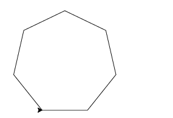
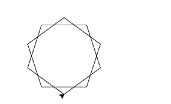
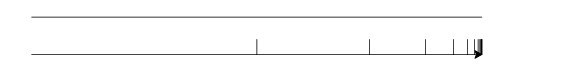
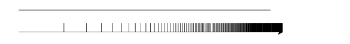
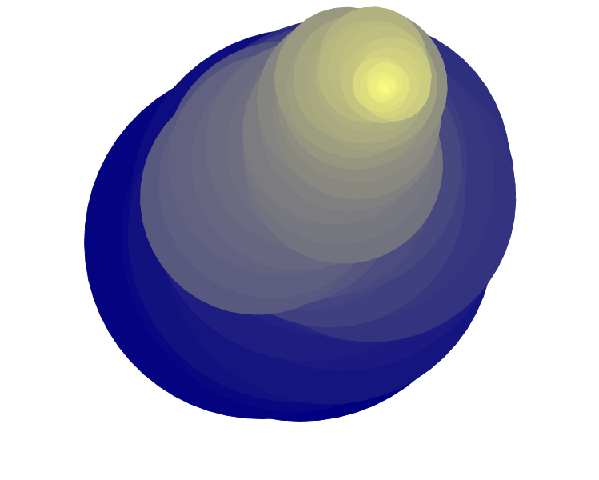

Vaje iz želvje grafike¶
Ne pozabite, za uporabljanje funkcij za risanje z želvico je potrebno na začetek datoteke napisati from turtle import *.

N-kotnik¶
Narišite pravilen n-kotnik. Število kotov n preberite od uporabnika ali definirajte na vrhu programa. Tudi dolžino stranic naj bo enostavno spremeniti. Rešitev, za n = 7 in dolzina_stranice = 100 je na sliki.
N-zvezda¶
Narišite pravilno n-zvezdo. Število kotov n in dolžina stranice naj bosta podana kot prej. Rešitev za n = 10 in dolzina_stranice = 100 je na sliki. Pozorni bodite na lihe in sode zvezde, saj so različne (sode so veliko težje za narisat). Lihe zvezde so običajne, torej pentagram itn ...
Vrste¶
Pokažite, da je vsota \(\displaystyle\sum_{i=0}^\infty\frac{1}{2^i} = 1 + \frac12 + \frac14 + \frac18 + \cdots = 2\). To “pokažemo” tako, da narišemo zelo veliko črtico dolgo dve enoti, nato pa spodaj še veliko črtic take dolžine \(\frac{1}{2^i}\) za \(i\)-je do velikega \(n\), npr 100. Enota in \(n\) naj bosta podani od uporabnika lai definirani na vrhu programa. Primer: enota = 300, n = 20
Večje vrste¶
Harmonična vrsta \(\displaystyle\sum_{i=1}^\infty \frac1i= 1 + \frac12 + \frac13 + \frac14 + \cdots\) nima končne vsote. To bomo pokazali tako, da si izberemo neko enoto, narišemo tako dolgo črto, spodaj pa seštejemo dovolj členov vrste (z neko drugo enoto), da pridejo čez prvo izbrano enoto. Obe enoti in število seštetih členov naj bodo prebrani od uporabnika ali definirani na vrhu programa. Primer: n = 200, primerjaj = 560, enota = 50.
Sodobna umetnost¶
Kot ste se/se boste naučili pri pouku umetnostne zgodovine je umetnost lahko karkoli. Pa se malo igrajmo in napacajmo nekaj barv na zalon. Narišite super abstraktno sliko, ki predstavlja razbito jajce na modrem nebu, seveda s kančkom popra in trdega diska. Risanje poteka tako: v vsakem koraku naričemo krog, malo drugačne barve kot prej, malo manjši kot prej, in se potem pomaknemo v naključno smer za malo manjšo razdaljo kot prej. Malo ekperimenirajte.
